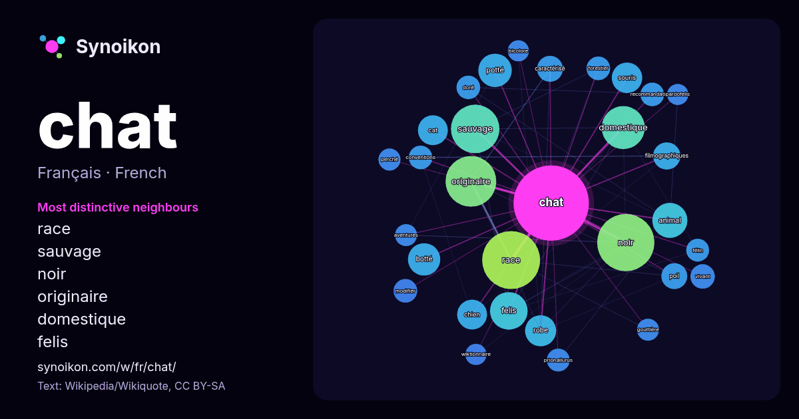

Français · mot populaire
chat
“cat” · Les mots trouvés autour de lui dans 1355 occurrences issues de Wikipédia, Wikiquote.

Voisins les plus spécifiques
- race 70×
- sauvage 53×
- noir 50×
- originaire 46×
- domestique 45×
- felis 39×
- potté 31×
- animal 31×
- botté 29×
- souris 24×
- robe 24×
- cat 24×
- filmographiques 21×
- chien 21×
- caractérisé 18×
- poil 18×
- conventions 15×
- recommandations 15×
- prionailurus 15×
- doré 15×
× = combien de fois plus souvent que dans le texte général de Wikipédia.
Voisins les plus fréquents
- race 90
- noir 88
- originaire 69
- sauvage 63
- domestique 50
- felis 38
- états-unis 34
- animal 33
- nom 31
- potté 30
- botté 28
- robe 26
- souris 25
- cat 24
- chien 24
- petit 24
- appelé 22
- espèce 21
- filmographiques 20
- également 19
En contexte
- Felis catus · Chat domestique Pour les articles homonymes, voir Chat (homonymie). Vous lisez un « bon article » labellisé en 2009. Felis catus Diverses Wikipedia snippets · Chat
- attendues ? Comment ajouter mes sources ? M. CHAT (écrit ainsi en capitales et par défaut prononcé « Monsieur Chat ») est une création graphique de l'artiste Wikipedia snippets · M. Chat
- labellisé en 2010. « Le Chat botté » redirige ici. Pour les autres significations, voir Le Chat botté (homonymie). Le Maître chat ou le Chat botté (en italien : Wikipedia snippets · Le Maître chat ou le Chat botté
- Pour les articles homonymes, voir Chat noir (homonymie). Le Chat noir Théophile-Alexandre Steinlen, Tournée du Chat noir (1896), 135,9 × 95,9 cm, université Wikipedia snippets · Le Chat noir
- du chat Pour les articles homonymes, voir Chat noir (homonymie). Pour l’article ayant un titre homophone, voir Chanoir. Noir Robe du chat Un chat noir Wikipedia snippets · Chat noir
- Cette liste de chats célèbres répertorie les chats qui ont connu une certaine notoriété (liste non exhaustive). Article détaillé : Souricier en chef du Wikipedia snippets · Liste de chats célèbres
- Le chat était l'un des nombreux animaux dont les attributs furent vénérés dans l'Égypte antique. Il était notamment associé au symbole de protection. Tou … Wikipedia snippets · Chat dans l'Égypte antique
- Le chat de Schrödinger est une expérience de pensée imaginée en 1935 par le physicien Erwin Schrödinger afin de mettre en évidence des lacunes supposées Wikipedia snippets · Chat de Schrödinger
Autres mots
- art
- automne
- carte
- chanson
- chemin
- cheval
- chien
- climat
- cloche
- cœur
- dieu
- désert
- eau
- famille
- forêt
- histoire
- hiver
- horloge
- jardin
- langue
- miel
- miroir
- monnaie
- montagne
- mort
- mère
- nature
- nourriture
- ombre
- pain
- pluie
- pont
- pouvoir
- printemps
- santé
- science
- sel
- silence
- temps
- tempête
- thé
- train
- travail
- trésor
- vie
- ville
- vérité
- étoile
- île
Précalculé le 2026-10-09 avec les paramètres par défaut (±5 mots, corpus moyen). La carte interactive peut l’actualiser avec des données en direct.
Interface traduite automatiquement ; corrections bienvenues.